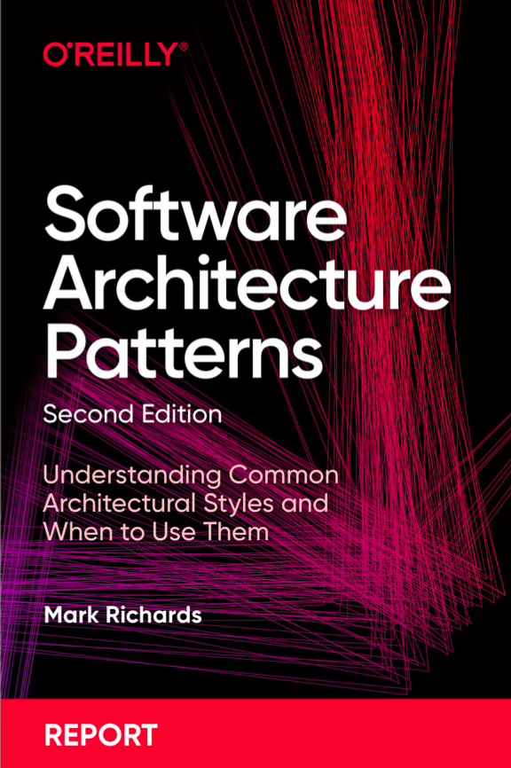
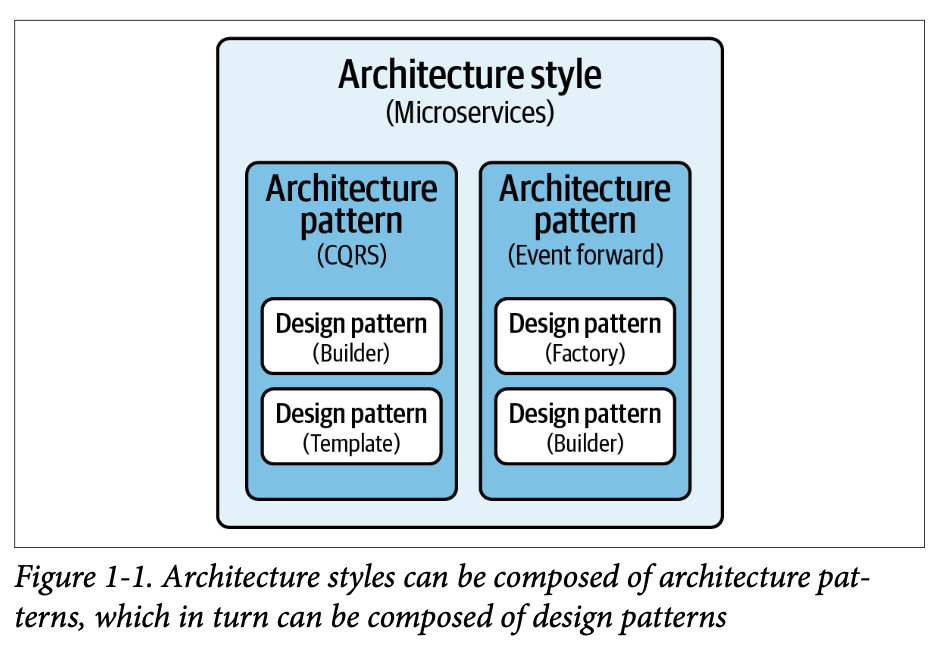

Book 'Software Architecture Patterns'
Architecture Style and Architecture Patterns
จากที่พวกเรา (กิมและน้องๆ ที่ทำงานบริษัท Arise) ช่วยกันเลือกหนังสือมาอ่านด้วยกัน ก็มาหยิบได้เล่มนี้ค่ะ ด้วยว่าเป็นเรื่องที่เราสนใจกันอยู่แล้ว และ…..มันสั้นดีนะ

ซึ่งเราชอบแนวคิด Architecture Style และ Architecture Pattern ค่ะ อ้างอิงบทที่ 2 ของหนังสือเล่มนี้
และ K.Mark Richards ก็มีอธิบายชวนเอ๊ะอีกนิดด้วยว่า ถ้าเราจะขมวดแบ่งแบบ architecture classification ลงไปเนี่ยจริงๆ มันก็มี 2 class นะ คือ monolithic และ distributed อ้ะแหละ เราเลือกให้ได้ก่อนเลยว่าจะหยิบอันไหนมาใช้เพื่อตอบโจทย์ ตอบรับกับระบบงานที่เรากำลังจะออกแบบค่ะ
มาเข้าเรื่องที่เราอยากเล่ากันค่ะ

Architecture Style คือ โครงสร้างการออกแบบระบบเป็นกรอบกว้างๆ เปรียบก็คงเหมือนพิมพ์เขียว ซึ่งครอบคลุมระบบที่เราต้องการออกแบบและพัฒนาทั้งหมดค่ะ เช่น x-layered architecture, distributed architecture และ microkernel architecture เป็นต้น
Architecture Pattern คือ การออกแบบในรายละเอียดส่วนประกอบเล็กๆ ภายในระบบ โดยใช้แก้ปัญหา, เพิ่มประสิทธิภาพ หรือตอบโจทย์ในเรื่องหนึ่งๆ ส่วนหนึ่งๆ เพียงบางเรื่องบางส่วนจากในระบบทั้งหมด เช่น การใช้ Circuit Breaker Pattern, Message Queue Pattern และ Event Sourcing Pattern เป็นต้น
เราจินตนาการในหัวว่า เค้าเป็นเหมือนรูปแบบ “ครอบครัว” โดยมี Architecture Style เป็นคุณพ่อคุณแม่ที่คอยวางแผนการดำเนินชีวิตในบ้าน และมี Architecture Pattern เป็นลูกๆ ที่ต้องทำหน้าที่เฉพาะตัว เช่น ล้างจาน ทิ้งขยะ หรือทำการบ้าน (อิรุงตุงนังแค่ไหน ก็ขึ้นกับว่างานในบ้านเราเยอะมากแค่ไหน หรือระบบของเราซับซ้อนแค่ไหนนั่นเอง)
แล้วในระบบของคุณล่ะ
ลูกๆ เยอะไปไหมคะ?
หรือคุณพ่อคุณแม่ดูแลวางแผนกันดีอยู่หรือป่าวคะ?
ขอให้ทุกท่านสนุกกับการอ่านค่ะ